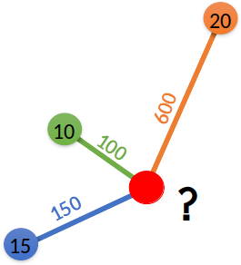

library(sf)
library(gstat)
library(tmap)
library(terra)
library(sp)10 Metody interpolacji
Odtworzenie obliczeń z tego rozdziału wymaga załączenia poniższych pakietów
10.1 Interpolacja przestrzenna
Interpolacje przestrzenne są jedną z ważniejszych procedur obliczeniowych w systemach geoinformacyjnych. Interpolacja przestrzenna opiera się zbiorze punktów pomiarowych i zasadzie podobieństwa przestrzennego, malejącego wraz z odległością. W procesie interpolacji, na podstawie danych punktowych oblicza się wartość zmiennej w nieznanej lokalizacji, dla której nie mamy danych pomiarowych. Większość metod interpolacji wymaga stworzenia siatki interpolacyjnej (pustego rastra), dla którego wykonuje się interpolację.
Interpolacja ma sens, jeśli interpolowana cecha charakteryzuje się ciągłością zmienności przestrzennej, rozumianej jako tendencja wzrostu zróżnicowania wartości wraz ze wzrostem odległości pomiędzy punktami.
Przykłady zmiennych, dla których można wykonać interpolację:
- Dane dotyczące wysokości terenu
- Temperatura powietrza
- Opady
- Grubość pokrywy śnieżnej
- Gęstość zaludnienia
- Zanieczyszczenia powietrza
Przykłady zastosowania interpolacji:
- Opracowanie map pola opadu, temperatury i innych elementów meteorologicznych.
- Oszacowanie wysokości terenu w danym punkcie na podstawie cyfrowego modelu wysokości (DEM).
- Przestrzenny rozkład zanieczyszczenia powietrza.
- Zmiana rozdzielczości przestrzennej rastra przy jego przekształceniu do innego układu współrzędnych.
10.2 Klasyfikacja metod interpolacji przestrzennej
Można wyróżnić dwie główne grupy metod interpolacji:
- metody deterministyczne
- metody statystyczne
10.2.1 Metody deterministyczne
Metody deterministyczne charakteryzują się tym, że ich parametry są zazwyczaj ustalane w oparciu o funkcję odległości lub powierzchni. Nie dostarczają one szacunków na temat oceny błędu modelu. Zaletą tych modeli jest ich prostota oraz krótki czas obliczeń.
Do metod deterministycznych należą, między innymi:
- Metoda diagramów Woronoja (ang. Voronoi diagram)
- Metoda średniej ważonej odległością (ang. Inverse Distance Weighted - IDW)
- Funkcje wielomianowe (ang. Polynomials)
- Funkcje sklejane (ang. Splines)
10.2.2 Metody statystyczne
Metody statystyczne charakteryzują się tym, że ich parametry określane są w oparciu o teorię prawdopodobieństwa, dodatkowo wynik estymacji zawiera także oszacowanie błędu. Metody te zazwyczaj wymagają większych zasobów sprzętowych.
Do metod statystycznych należą, między innymi:
- Kriging
- Modele regresyjne
- Modele bayesowskie
W tym rozdziale omówione zostaną przykłady metod deterministycznych, a w kolejnym rozdziale wprowadzone zostaną metody estymacji geostatystycznych.
10.3 Metody interpolacji w R
10.3.1 Diagramy Woronoja
Metoda diagramów Woronoja polega na stworzeniu nieregularnych poligonów na podstawie analizowanych punktów, a następnie wpisaniu w każdy poligon wartości odpowiadającego mu punktu.
Dane
#granica obszaru wczytana jako obiekt klasy SpatVector z pakietu terra
granica = vect("data/granica.gpkg")library(terra)
punkty = read.csv("data/punkty.csv")
punkty = punkty[!is.na(punkty$temp),]
punkty_vect = vect(punkty, c("x", "y"), crs = granica)Interpolacja
W poniższym przykładzie metoda poligonów Woronoja została zastosowana z użyciem funkcji voronoi() z pakietu terra.
#interpolacja
voronoi_interp = voronoi(punkty_vect)Funkcja crop() z pakietu terra służy do przycięcia warstwy wektorowej przez inny wektor.
voronoi_interp_granica = crop(voronoi_interp, granica)Wizualizacja
tm_shape(voronoi_interp_granica) +
tm_polygons(fill = "temp",
fill.scale = tm_scale_continuous(n = 10, values = "-spectral"),
fill.legend = tm_legend(title = "Diagramy Woronoja:\ntemperatura")) +
tm_layout(legend.outside = TRUE)10.3.2 Metoda średniej ważonej odległością (IDW)
Metoda średniej ważonej odległością (IDW) jest jedną z najczęściej stosowanych metod interpolacji. Metoda IDW wylicza wartość dla każdej komórki na podstawie wartości punktów obokległych ważonych odwrotnością ich odległości. W efekcie, czym bardziej jest punkt oddalony, tym mniejszy jest jego wpływ na interpolowaną wartość.
10.3.2.1 Wykładnik potęgowy
Wagę punktów ustala się z użyciem argumentu wykładnika potęgowego (idp, ang. inverse distance weighting power).
Domyślnie stosuje się wartość wykładnik idp=2. Wartość 0 oznacza, że wszystkie punkty będą miały taką samą wagę. Wyższa wartość wykładnika oznacza, że największy wpływ będą miały najbliższe punkty pomiarowe. W efekcie otrzymana powierzchnia będzie bardziej szczegółówa (mniej wygładzona).
Niższa wartość wykładnika oznacza większy wpływ punktów bardziej odległych, co skutkuje nardziej wygładzoną powierzchnią powstałą w wyniku interpolacji.
10.3.2.2 Przykład
Wartość w nieznanej lokalizacji jest obliczana na podstawie wzoru:
\[z = \frac{\sum_{i=1}^{n} w_iz_i}{\sum_{i=1}^{n} w_i}\] Wartość wagi \(w_i\) dla danego punktu jest obliczana jako:
\[w_i = \frac{1}{d_{i}^{p}}\]
Zatem:
\[z = \frac{\sum_{i=1}^{n} \frac{z_i}{d_{i}^{p}}}{\sum_{i=1}^{n} \frac{1}{d_{i}^{p}}}\]
Oszacujemy wartość zmiennej (w czerwonym punkcie) na podstawie wartości oraz odległości przedstawionych na poniższym rysunku.

Obliczenie wartości \(z\) dla wykładnika potęgi równego 1:
\[z = \frac{10/100 + 15/150 + 20/600}{1/100 + 1/150 + 1/600} = \frac{\frac{60 + 60 + 20}{600}}{\frac{6 + 4 + 1}{600}} = \frac{\frac{140}{600}}{\frac{11}{600}} = \frac{140}{11} = 12.72727\]
Obliczenie wartości \(z\) dla wykładnika potęgi równego 2:
\[z = \frac{10/100^2 + 15/150^2 + 20/600^2}{1/100^2 + 1/150^2 + 1/600^2} = 11.69811\]
Poniższa funkcja obliczy wartość w punkcie na podstawie wektora wartości obokległych punktów (argument wartosc), oraz odległości między punktami o znanych wartościach a punktem o nieznanej wartości (argument d). Argument power oznacza wykładnik potęgi.
idw <- function(wartosc, d, power = 2) {
# Obliczanie wag
wagi <- 1 / (d^power)
# Obliczanie wartości z
estymowana_wartosc <- sum(wagi * wartosc) / sum(wagi)
return(estymowana_wartosc)
}Obliczenie wartości \(z\) dla wykładnika potęgi równego 1:
wartosc = c(10, 15, 20)
d = c(100, 150, 600)
idw(wartosc, d, power = 1)[1] 12.72727Wykorzystując powyższą funckję oblicz wartość z wykorzystując wykładnik potęgi 2.
10.3.2.3 IDW w R
Dane
#granica obszaru wczytana jako obiekt klasy SpatVector z pakietu terra
granica = vect("data/granica.gpkg")punkty = read.csv("data/punkty.csv")
punkty = punkty[!is.na(punkty$temp),]Tworzenie siatki
Metoda IDW wymaga utworzenia siatki interpolacyjnej (pustego rastra). Siatka interpolacyjna zostanie utworzona jako obiekt SpatRaster wykorzystując funkcję rast() z pakietu terra.
siatka = rast(ext = granica, res = 50, crs = crs(granica))
siatkaclass : SpatRaster
size : 172, 229, 1 (nrow, ncol, nlyr)
resolution : 50, 50 (x, y)
extent : 745541.7, 756991.7, 712651.6, 721251.6 (xmin, xmax, ymin, ymax)
coord. ref. : ETRF2000-PL / CS92 (EPSG:2180) Interpolacja
Wykonanie interpolacji w siatce wymaga stworzenia obiektu klasy gstat z parametrami. Obiekt ten tworzony jest wykorzystując funkcję gstat() z pakietu gstat.
Obiekt klasy gstat składa się z kilku list zawierających:
- formula - formuła wykorzystywana do interpolacji (w przykładzie temp~1),
- data - ramka danych z danymi wejściowymi zawierającymi wartości estymowanej zmiennej (w przykładzie obiekt punkty),
- locations - formuła określająca współrzędne punktów dla których ma być wykonana interpolacja (x, y to nazwy kolumn w obiekcie punkty, które zawierają współrzędne)
- inne parametry (np. set=list(idp = 2) pozwala na zdefiniowanie wykładnika potęgowego używanego w metodzie IDW).
library(gstat)
idw_param = gstat(id = "temp",
formula = temp ~ 1,
locations = ~x+y,
data = punkty,
set=list(idp = 2))Funkcja interpolate() z pakietu terra wykonuje interpolację dla obiektu siatki (siatka) oraz zdefiniowanych parametrów (idw_param).
idw_interp = interpolate(siatka, idw_param)[inverse distance weighted interpolation]
[inverse distance weighted interpolation]Funkcja mask() jest wykorzystywana do przycięcia obiektu rastrowego do granic obiektu wektorowego.
idw_interp_granica = mask(idw_interp, granica)Wizualizacja
tm_shape(idw_interp_granica) +
tm_raster(col = c("temp.pred"),
col.scale = tm_scale_continuous(n = 10, values = "-spectral"),
col.legend = tm_legend(title = "IDW")) +
tm_layout(legend.outside = TRUE)10.3.3 Funkcje wielomianowe
Interpolacja z wykorzystaniem funkcji wielomianowych dopasowuje gładką powierzchnię zdefiniowaną przez funkcję matematyczną (wielomian) do punktowych danych. Metoda jest czuła na występowanie odstających wartości.
Dane
Pakiet gstat wykorzystuje dane w formacie pakietu sp. Obiekt punkty trzeba przekonwertować z formatu sf do formatu SpatialPoints z pakietu sp.
library(terra)
library(sf)
#punkty przekształcone do warstwy geoprzestrzennej typu sf
punkty = read.csv("data/punkty.csv")
punkty = st_as_sf(punkty, coords = c("x", "y"), crs = "EPSG:2180", remove = FALSE)
punkty = punkty[!is.na(punkty$temp), ]
#granica obszaru wczytana jako obiekt klasy SpatVector z pakietu terra
granica = vect("data/granica.gpkg")sp_punkty <- as(punkty, "Spatial")Tworzenie siatki
Funkcje wielomianowe wymagają utworzenia siatki interpolacyjnej (pustego rastra). Siatka interpolacyjna zostanie utworzona jako obiekt SpatRaster wykorzystując funkcję rast() z pakietu terra, a następnie przekształcona do obiektu SpatialGrid z pakietu sp wykorzystywanego przez pakiet gstat.
library(terra)
siatka = rast(ext = granica, res = 50, crs = crs(granica))
siatkaclass : SpatRaster
size : 172, 229, 1 (nrow, ncol, nlyr)
resolution : 50, 50 (x, y)
extent : 745541.7, 756991.7, 712651.6, 721251.6 (xmin, xmax, ymin, ymax)
coord. ref. : ETRF2000-PL / CS92 (EPSG:2180) Funkcja xyFromCell() pobiera współrzędne środka komórki rastra. Funkcja coordinates() z pakietu sp na podstawie współrzędnych tworzy obiekt typu Spatial Points. Funkcja proj4string ustawia układ odniesienia.
library(sp)
siatka_xy <- data.frame(xyFromCell(siatka, 1:ncell(siatka)))
coordinates(siatka_xy) <- ~x + y
proj4string(siatka_xy) <- CRS("EPSG:2180")Interpolacja
Stosowanie funkcji wielomianowych w R może odbyć się z wykorzystaniem funkcji gstat() z pakietu gstat. Wymaga ona utworzenia obiektu klasy gstat i zdefiniowania trzech argumentów:
- formula określającego naszą analizowaną cechę (temp~1 mówi, że chcemy interpolować wartość temperatury zależnej od samej siebie),
- data określający analizowany zbiór danych,
- degree określający stopień wielomianu.
library(gstat)
wielomian_1 <- gstat(formula = temp ~ 1, data = sp_punkty, degree = 1)Następnie funkcja predict() przenosi nowe wartości na wcześniej stworzoną siatkę.
wielomian_1_pred = predict(wielomian_1, newdata = siatka_xy)[ordinary or weighted least squares prediction]Otrzymamy wynik w formacie SpatialPointsDataFrame, który musimy przekształcić do formatu rastrowego (SpatRaster).
wielomian_1_pred_rst <- setValues(siatka, wielomian_1_pred$var1.pred)Wynik interpolacji można przyciąć do granicy.
wielomian_1_pred_rst_granica = mask(wielomian_1_pred_rst, granica)Wizualizacja
tm_shape(wielomian_1_pred_rst_granica) +
tm_raster(col = c("lyr.1"),
col.scale = tm_scale_continuous(values = "-spectral", n = 10),
col.legend = tm_legend(title = "Wielomian pierwszego stopnia")) +
tm_layout(legend.outside = TRUE)[plot mode] fit legend/component: Some legend items or map compoments do not
fit well, and are therefore rescaled.
ℹ Set the tmap option `component.autoscale = FALSE` to disable rescaling.Wielomian II stopnia
wielomian_2 <- gstat(formula = temp ~ 1, data = sp_punkty, degree = 2)
wielomian_2_pred = predict(wielomian_2, newdata = siatka_xy)[ordinary or weighted least squares prediction]wielomian_2_pred_rst <- setValues(siatka, wielomian_2_pred$var1.pred)
wielomian_2_pred_rst_granica = mask(wielomian_2_pred_rst, granica)tm_shape(wielomian_2_pred_rst_granica) +
tm_raster(col = c("lyr.1"),
col.scale = tm_scale_continuous(values = "-spectral", n = 10),
col.legend = tm_legend(title = "Wielomian drugiego stopnia")) +
tm_layout(legend.outside = TRUE)[plot mode] fit legend/component: Some legend items or map compoments do not
fit well, and are therefore rescaled.
ℹ Set the tmap option `component.autoscale = FALSE` to disable rescaling.Wielomian III stopnia
wielomian_3 <- gstat(formula = temp ~ 1, data = sp_punkty, degree = 3)
wielomian_3_pred = predict(wielomian_3, newdata = siatka_xy)[ordinary or weighted least squares prediction]wielomian_3_pred_rst <- setValues(siatka, wielomian_3_pred$var1.pred)
wielomian_3_pred_rst_granica = mask(wielomian_3_pred_rst, granica)tm_shape(wielomian_3_pred_rst_granica) +
tm_raster(col = c("lyr.1"),
col.scale = tm_scale_continuous(values = "-spectral", n = 10),
col.legend = tm_legend(title = "Wielomian trzeciego stopnia")) +
tm_layout(legend.outside = TRUE)10.3.4 Funkcje sklejane
Interpolacja z wykorzystaniem funkcji sklejanych dopasowuje krzywą powierzchnię do wartości analizowanych punktów. W wyniku interpolacji otrzymuje się gładką powierzchnię przechodzącą dokładnie przez punkty wejściowe. Metoda ta jest stosowana np. do generowanie delikatnie zmieniających się powierzchni, takich jak wysokość, wysokość zwierciadła wody lub stężenie zanieczyszczeń.
Interpolacja z użyciem funkcji sklejanych wykonuje się wykorzystując funkcję Tps() z pakietu fields.
Dane
library(terra)
library(sf)
#punkty przekształcone do warstwy geoprzestrzennej typu sf
punkty = read.csv("data/punkty.csv")
sf_punkty = st_as_sf(punkty, coords = c("x", "y"), crs = "EPSG:2180", remove = FALSE)
sf_punkty = sf_punkty[!is.na(sf_punkty$temp), ]
#granica obszaru wczytana jako obiekt klasy SpatVector z pakietu terra
granica = vect("data/granica.gpkg")Tworzenie siatki
library(terra)
siatka = rast(ext = granica, res = 50, crs = crs(granica))
siatkaclass : SpatRaster
size : 172, 229, 1 (nrow, ncol, nlyr)
resolution : 50, 50 (x, y)
extent : 745541.7, 756991.7, 712651.6, 721251.6 (xmin, xmax, ymin, ymax)
coord. ref. : ETRF2000-PL / CS92 (EPSG:2180) Interpolacja
library(fields)
tps <- Tps(st_coordinates(sf_punkty), sf_punkty$temp)
# use model to predict values at all locations
tps_interp <- interpolate(siatka, tps)
tps_interp_granica <- mask(tps_interp, granica)tm_shape(tps_interp_granica) +
tm_raster(col = c("lyr.1"),
col.scale = tm_scale_continuous(values = "-spectral", n = 10),
col.legend = tm_legend(title = "Funkcje sklejane")) +
tm_layout(legend.outside = TRUE)